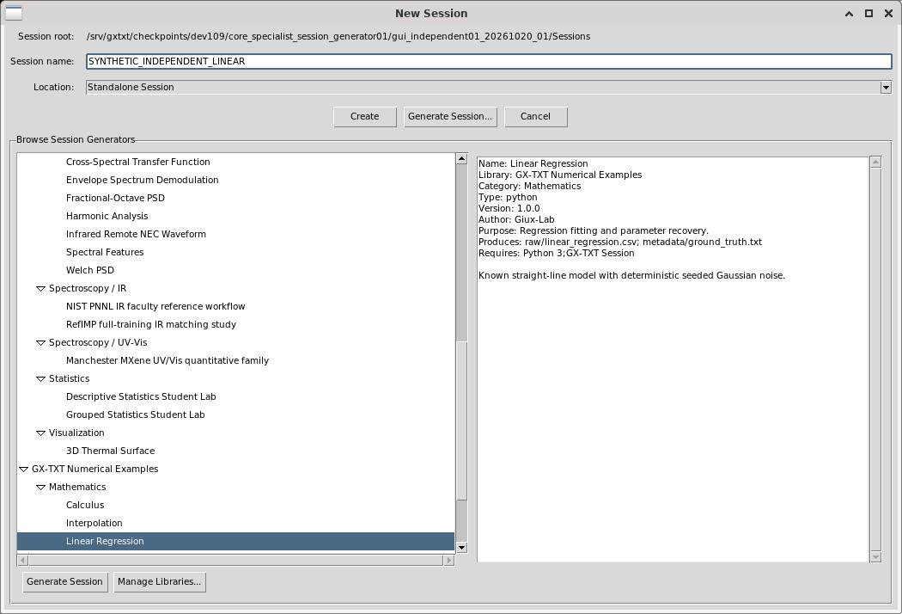
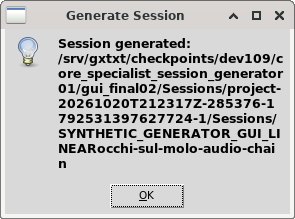
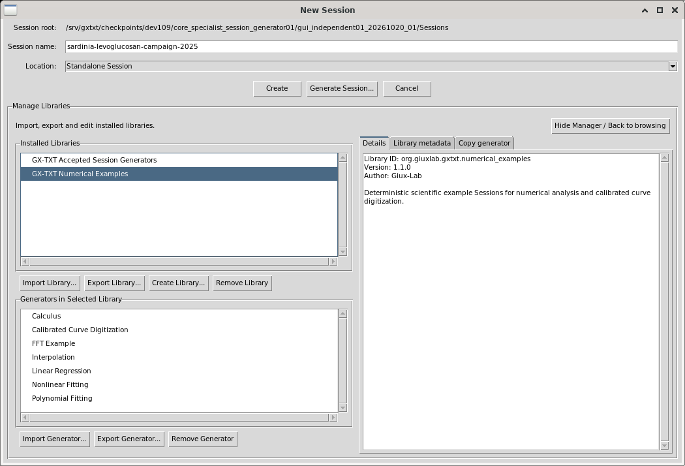
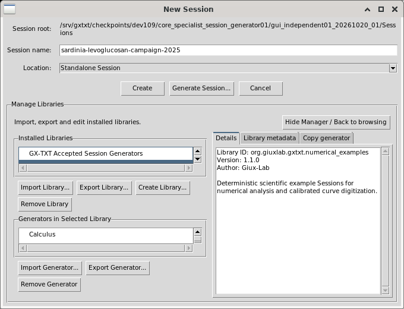

GX-TXT · New Session · dev109 candidate instructions
Browse Session generators and manage their libraries
Choose a generator, read what it produces, and create its example Session. Use the same dialog to inspect installed libraries, edit their metadata, or import, export and copy generators.
Open the browser
- Make sure a Session root is configured. If New Session asks for one, open Configuration → Storage, create a named Storage Profile, set its New Session root to an existing directory, and choose Save & Apply.
- Open the Sessions tab, then choose Session → New Session....
- Review Location. Choose Standalone Session or the intended Project. The generator uses that choice when creating the Session.
- Choose the upper Generate Session... button to show the browser. This button opens browsing; the lower Generate Session button runs the selected generator.
To create an ordinary empty Session, enter its name and choose Create. Generator browsing is optional.
Choose a generator and read its description
- Expand a library and category in the left tree using their disclosure arrows. The arrow keys also navigate the native tree.
- Select a generator row. Its description on the right identifies the generator, library, category, version and any supplied purpose, output files and requirements.
- Check the Session name after choosing the generator. An empty name may receive the generator's suggestion; text already present stays in the field when you switch generators. Edit it explicitly to the intended final name.
Selecting a library or category shows its browsing information and disables the lower Generate button. Select a generator again to enable it.

Drag the vertical divider to change the tree/description proportions. Use the tree's horizontal scrollbar for a long name and its vertical scrollbar for more rows. The description has its own scrollbar and accepts wheel scrolling.
Generate a numerical example
- Select GX-TXT Numerical Examples → Mathematics → Linear Regression.
- Set an explicit Session name and confirm Location.
- Choose the lower Generate Session. On success, acknowledge Session generated; GX-TXT opens the new Session normally.
This bundled numerical example produces raw/linear_regression.csv
and metadata/ground_truth.txt. Its 41 data rows follow
y = 2.5 x + 1.2 + noise, with Gaussian noise of standard deviation
0.12 and seed 1971. These are deterministic example
numbers; no physical measurement units are implied.
The generated Session also records library/generator identity, version and type
in metadata/session_generator.ini. Generation creates the example;
it does not demonstrate that a later analysis or fit has been run.

Manage libraries, then return to browsing
Choose Manage Libraries... in the browser. The left side lists libraries and the generators in the selected library. The right side has Details, Library metadata and Copy generator tabs.

| Task | Controls and expected result |
|---|---|
| Inspect | Select a library or generator and open Details. Changing libraries clears the previous generator selection. |
| Edit library metadata | Select the library, open Library metadata, edit Name, Description, Version or Author, then choose Save Metadata. The library's stable ID stays the same. |
| Create a library | Choose Create Library..., enter its name and metadata, then choose Create. The new library starts without generators. |
| Import or export a whole library | Use Import Library... or select a library and choose Export Library.... Choose the package or output filename in the normal file chooser. Importing an already installed library reports that conflict. |
| Import or export one generator | Select the destination library before Import Generator.... To export, select its library and generator, then choose Export Generator.... |
| Copy between libraries | Select the source library and generator. Open Copy generator, choose the destination library, then choose Add Generator to Library.... This copies the installed generator; it does not run it. |
| Cancel a removal | Remove Library or Remove Generator opens a confirmation for that selected identity. Choose No to keep it. The illustrated checks used a disposable synthetic library and cancelled both confirmations. |
Return with Hide Manager / Back to browsing, or the upper Generate Session... button. The browser restores its selected identity, expanded branches, scrolling and splitter proportions. Manager and browser keep their own divider proportions.

Closing the dialog ends that browsing interaction. Reopening starts with no active generator. Installed libraries and previously generated Sessions remain available.
Repeat the interaction check
This short check exercises browsing and Manager transitions without generating another Session or changing a library.
- Open the browser and select Linear Regression. Read its description and check that the lower Generate button is enabled.
- Select its Mathematics category, then its library row. Check the description changes and Generate is disabled in both cases.
- Collapse and expand a different branch, then reselect the intended generator and drag the divider. Note its selected name and the current window size.
- Open Manager, then use Hide Manager / Back to browsing. Check that the selected identity, divider and window size remain useful.
- Open Manager again and return with the upper Generate Session... button. Check the same state and use the arrow keys in the browser.
- Make the window narrower. Scroll a long name or description, open Manager and visit its three tabs. Confirm the lists, descriptions and controls remain reachable.
- Choose Cancel, reopen New Session and show the browser. Check that Generate stays disabled until a generator is selected.
Evidence and contract
All images are unaltered real Debian GUI captures from isolated QA profiles. Synthetic library names and private paths identify test material. The guide covers the Session Generator dialog; scientific producer algorithms and other workspaces are outside it.
The existing Help browser uses the Markdown Help edition; this HTML edition opens in a normal browser.
Image provenance and SHA-256 values are in IMAGE_PROVENANCE.json. The existing developer contract is Session Generator Library API v1.
These instructions describe the reviewed dev109 candidate. Independent branch review and reused author evidence remain distinct from MAIN's installed acceptance and release decision.
MAIN accepted SESSION-GEN-BROWSER-01 through -07 on 2026-10-21 at unchanged CORE source33f301. See the seven-criterion matrix and acceptance provenance. Receipt: MAIN_FAMILY_ACCEPTANCE87.json, SHA256 69e24c09bb11406cb7f35028f563747192607981ba7876a3c056af6edad687e8. Whole workstream6 and all15 release remain OPEN. This documentation reconciliation awaits MAIN integration; original native evidence remains unchanged.